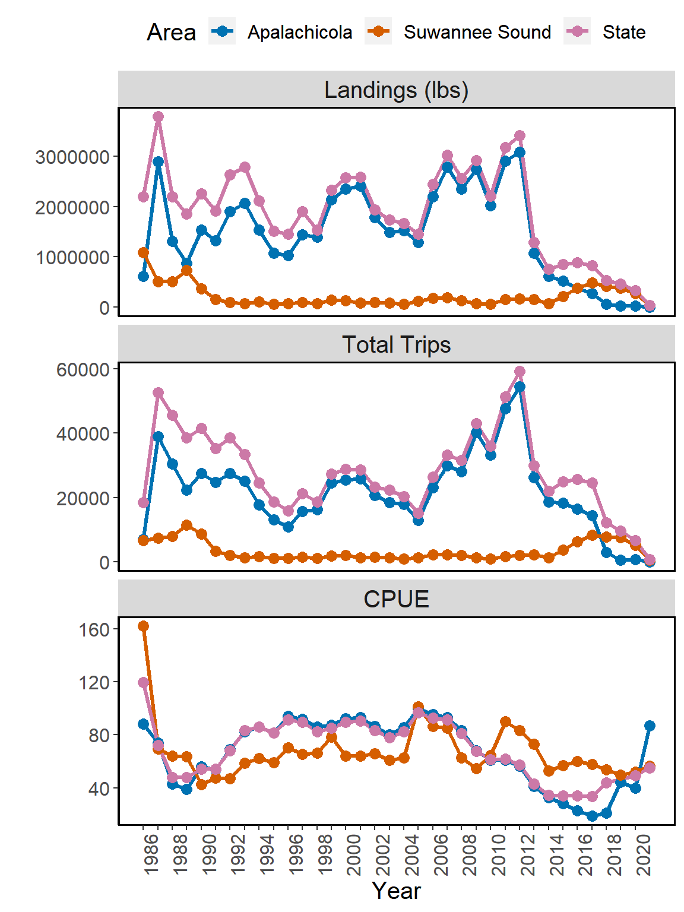
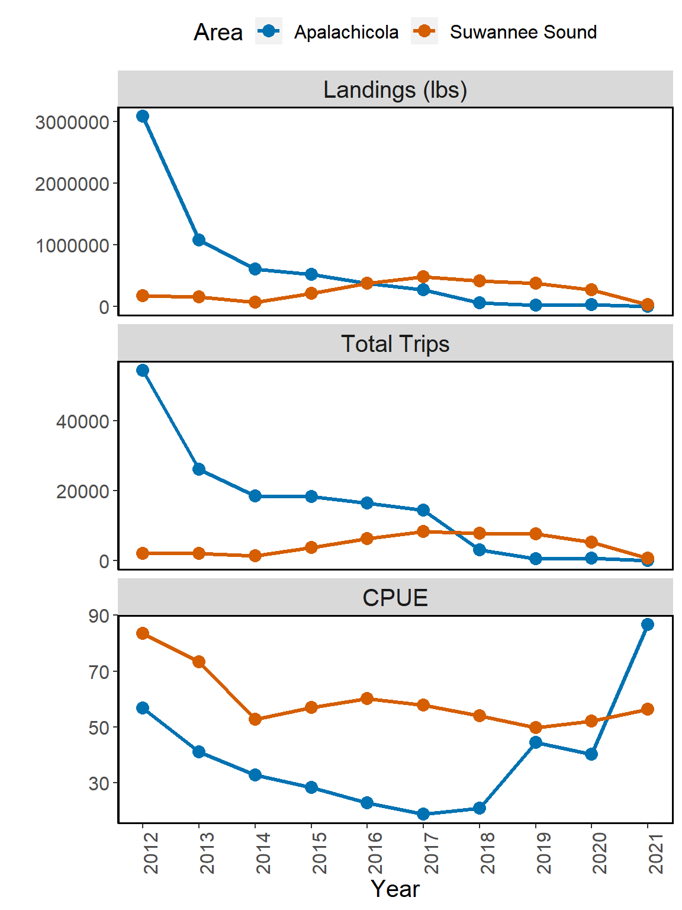
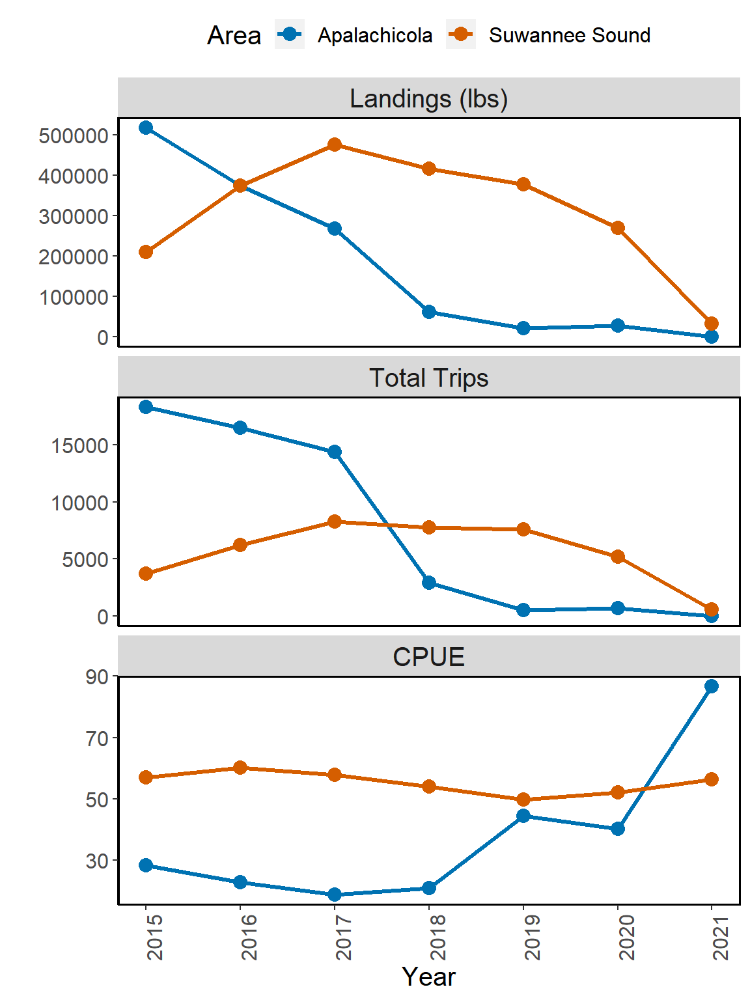

Chapter 6 Landings
This data set is manually updated by the oyster landings data located here: https://public.myfwc.com/FWRI/PFDM/ReportCreator.aspx. The Commercial Fisheries Landings Summaries allows the user to select the date year range and oysters (as the Species).
The Suwannee counties used in these figures are TAYLOR, DIXIE, and LEVY.
The Apalachicola counties used iin these figures are FRANKLIN and WAKULLA.
The State of Florida data are all of the counties, and this is selected in the FWC Commercial Fisheries Landings Summaries website.


